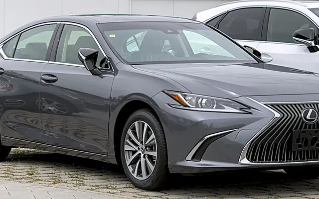

Par Motor › Precios por modelo › Lexus ES
Precio de segunda mano · noviembre de 2026¿Cuánto vale un Lexus ES de segunda mano?

Precio justo estimado de un Lexus ES usado en España, año por año, con los kilómetros normales para su edad y en buen estado: de 27.000 € a 53.700 €. Para tasar el tuyo con sus kilómetros reales y su estado, usa el tasador gratis.
Precios del Lexus ES por año
ES VII (2018–hoy)
Precio de nuevo: 2.5 Hybrid 218 CV, 50.000 €
| Año | Km normales | 2.5 Hybrid 218 CV · Híbrido |
|---|---|---|
| 2026 | 5.000 km | 53.700 € |
| 2025 | 20.000 km | 45.900 € |
| 2024 | 35.000 km | 42.900 € |
| 2023 | 50.000 km | 40.000 € |
| 2022 | 65.000 km | 37.300 € |
| 2021 | 80.000 km | 33.400 € |
| 2020 | 95.000 km | 29.200 € |
| 2019 | 100.000 km | 27.500 € |
| 2018 | 100.000 km | 27.000 € |
Kilómetros normales: 15.000 al año en gasolina, híbridos y eléctricos, y 20.000 en diésel, con un máximo de 100.000 km (por encima no tasamos: el precio depende demasiado del historial de cada coche). Cifras redondeadas a 100 €.
Preguntas frecuentes
¿Cuánto vale un Lexus ES de segunda mano?
Según el año, la versión y los kilómetros, un Lexus ES usado vale hoy de 27.000 € a 53.700 € en España. El más barato de nuestra tabla es un 2.5 Hybrid de 2018 (27.000 €) y el más caro un 2.5 Hybrid de 2026 (53.700 €). Son precios justos estimados entre particulares y profesionales, con los kilómetros normales para su edad y en buen estado.
¿Cuánto valor pierde un Lexus ES al año?
Con unos años encima, un Lexus ES pierde alrededor de un 7 % de su valor cada año (calculado sobre el 2.5 Hybrid de la generación ES VII). Los primeros años la caída es mayor y a partir de los 70.000 km se acelera.
¿Qué motorizaciones tiene el Lexus ES?
En nuestra base de datos hay versiones híbrido, en 1 generación: ES VII.
¿Cómo sé si me piden demasiado por un Lexus ES?
Abre el tasador de Par Motor, elige el Lexus ES, el año y los kilómetros reales, y escribe lo que te piden. Te diremos si está por debajo del precio justo (chollo) o por encima (caro). Es gratis y no pide registro ni matrícula.
Otros Lexus
Compara su coste real
El precio de compra es solo una parte. Mira cuánto te costaría al mes con combustible, seguro, neumáticos, mantenimiento y lo que pierde de valor.
Abrir el comparador →